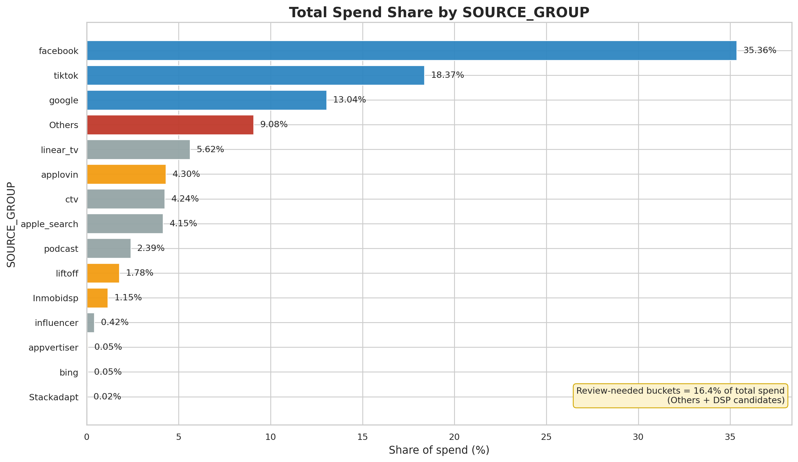
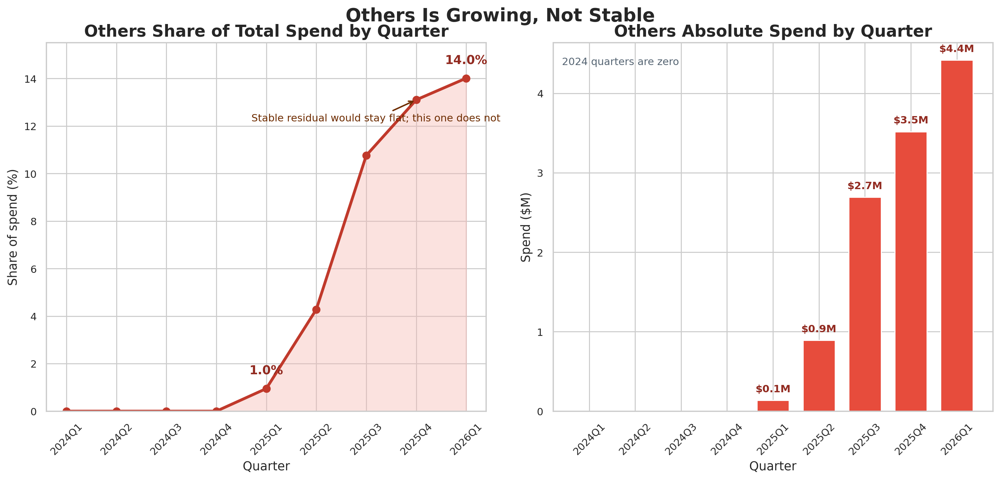
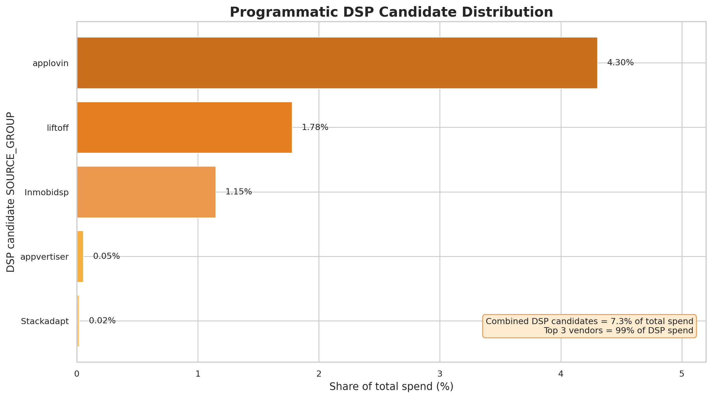
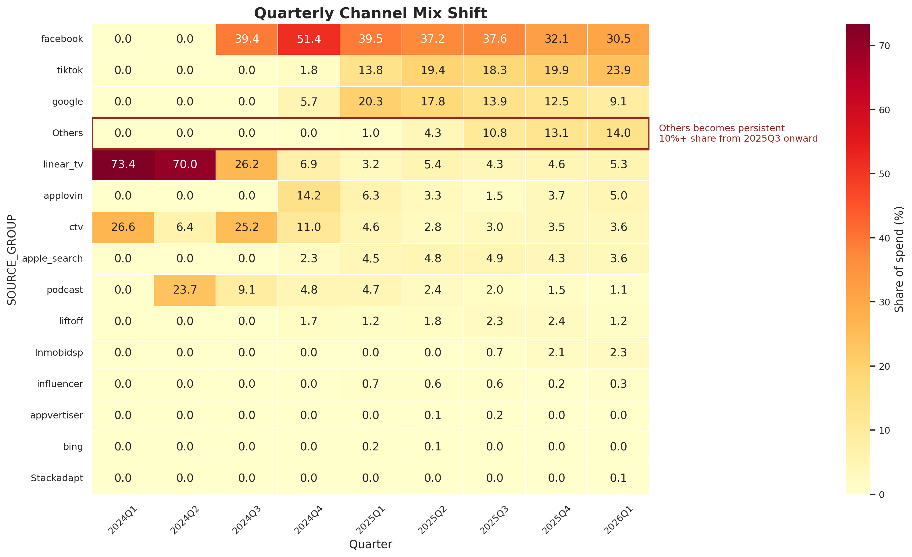

MMM Preliminary Recommendations
Framework, Channel Mapping, and Open Decisions
2026-04-21
Discussion Goal
- Share preliminary recommendations from this week
- Highlight what is resolved vs still open
- Surface the highest modeling risks
- Align on decisions needed next
- This discussion is preliminary
What We Focused On This Week
- Framework evaluation: Meridian vs PyMC-Marketing
- SOURCE_GROUP to channel mapping exploration
- “Others” bucket behavior and risk
- Experiment quality and calibration implications
- Data-readiness items before modeling
What We Took From Last Week
- Model at channel x platform level
- Requirement: two outputs, conversions and LTV
- Meta, TikTok, CTV tests inform calibration
- March 2026 is the modeling cutoff
- Simple regression is not the right path
Channel Guidance From Last Meeting
- Meta stays grouped, split by platform
- DSPs should stay separate initially
- Apple stays separate
- Audio / Spotify stays separate
- “Others” depends on trend behavior
What Is Resolved vs Open
Resolved
- Platform fixes are defined
- LTV anomaly windows are defined
- March 2026 cutoff is defined
- Jan 2026 Meta stays in
Still Open
- Final channel taxonomy
- DSP grouping approach
- “Others” treatment
- Initial modeling aggregation choice
Frameworks We Reviewed
Finalists
Screened Out
- LightweightMMM: archived, unsupported
- Robyn: not our Bayesian path
- Custom PyMC: fallback only
Meridian: Preliminary View
- Strong Bayesian MMM defaults
- Clean ROI prior workflow
- Built-in optimization support
- Better fit for simpler structure
- Less flexible if requirements expand
PyMC-Marketing: Preliminary View
- Strong Bayesian MMM flexibility
- Better fit for custom structure
- Better response-curve options
- Easier path to raw PyMC later
- More setup and prototyping work
Experiment Quality Matters Here
- TikTok and Meta are higher-confidence signals
- CTV is useful, but lower-confidence
- Jan 2026 Meta stays with wider uncertainty
- Meta test windows caused known conversion dips
- Framework choice should handle uneven evidence quality
Why Experiments Affect Framework Choice
- Calibration is not a nice-to-have
- Priors need clean channel mapping
- Uneven test quality needs careful treatment
- Meta disruption periods likely require special treatment; exact approach is under evaluation
- Flexibility matters beyond base MMM setup
Framework Recommendation
- Our current view is that PyMC-Marketing is the stronger starting point
- This suggests a better fit for the current complexity
- It keeps customization options open
- Meridian remains a credible backup
- We recommend exploring one prototype before locking selection
- Does PyMC-Marketing feel like the right prototype starting point, or would you prefer Meridian first?
Preliminary Channel Mapping View
- Meta, TikTok, Google stay separate
- Linear TV and CTV stay separate
- Apple Search stays separate
- Podcast / Audio stays separate
- Based on the recent trend, our current view is that “Others” may need breakdown, pending alignment
Mapping Is Blocking Modeling
- We have 15 raw SOURCE_GROUP values
- Priors attach to channels, not raw noise
- Mapping changes model dimensionality
- Mapping affects channel-platform design
- The current mapping is proposed and awaiting approval before preprocessing
Why Mapping Matters

Source group spend concentration and mapping ambiguity
- Mapping ambiguity affects a meaningful share of spend, at roughly 16%
- This is not just long-tail noise, so taxonomy choices can materially affect the model
Mapping Implication
- Does the proposed channel taxonomy direction look right?
- For the major DSP sources, would you prefer that we keep them separate initially or group them?
“Others” Share Grew Rapidly

Others share of spend growth over time
- “Others” share has grown by roughly 15x and is now a material part of spend
- This suggests it is no longer a small residual bucket
What This Suggests for “Others”
- It reduces channel-level interpretability
- It weakens prior assignment
- It can distort optimization outputs
- It increases delivery risk
- Based on this, our current view is that breakdown may be needed, but we need alignment
- Given this, how would you prefer we treat “Others”?
Data Readiness Summary
iso is proposed to map to iOSweb and app is proposed to map to web- March 2026 is the final cutoff
- LTV anomaly windows are expected to be imputed
- Data is available at daily granularity; modeling resolution is a design choice
- Mapping remains the main blocker
- Since data is available daily, would you prefer we start modeling at daily or weekly aggregation?
Preliminary Recommendations
- Our current view is to start with PyMC-Marketing as the primary path
- Data is available daily; we are evaluating the right starting aggregation
- Our current approach is to keep two separate outcome models
- Use the approved mapping before full preprocessing
- We recommend exploring whether “Others” should be broken down before modeling
Decision Recap
- Channel taxonomy: approve current direction or revise key mappings now
- Major DSP sources: keep separate initially or group for stability
- “Others”: keep as a residual bucket or break it down
- Framework starting point: PyMC-Marketing first or Meridian first
- Modeling aggregation: start weekly or daily
Appendix: Mapping Summary
| facebook |
Meta |
35.36% |
Proposed |
| tiktok |
TikTok |
18.37% |
Proposed |
| google |
Google |
13.04% |
Proposed |
| Others |
Needs breakdown |
9.08% |
Under review |
| linear_tv |
Linear TV |
5.62% |
Proposed |
| ctv |
CTV |
4.24% |
Proposed |
| apple_search |
Apple Search |
4.15% |
Proposed |
| podcast |
Audio / Podcast |
2.39% |
Proposed |
Appendix: Mapping Summary
| applovin |
AppLovin (DSP) |
4.30% |
Needs confirmation |
| liftoff |
Liftoff (DSP) |
1.78% |
Needs confirmation |
| Inmobidsp |
InMobi (DSP) |
1.15% |
Needs confirmation |
| influencer |
Influencer |
0.42% |
Proposed |
| appvertiser |
Appvertiser (DSP) |
0.05% |
Needs confirmation |
| bing |
Bing / Microsoft |
0.05% |
Needs confirmation |
| Stackadapt |
StackAdapt (DSP) |
0.02% |
Needs confirmation |
Appendix: DSP Spend Is Concentrated

DSP vendor spend distribution
- The majority of DSP spend is concentrated in three vendors
- This suggests the grouping decision is focused and manageable rather than broad
Appendix: Channel Mix Inside “Others”

Channel mix heatmap for source groups over time
- The mix appears to shift over time, which further supports reviewing whether “Others” may be masking multiple behaviors
- This is supporting context for the main-deck discussion on whether breakdown is needed
Appendix: Experiment Facts
- TikTok and Meta tests are user-level holdouts
- CTV is a geo-based holdout
- Jan 2026 Meta was cancelled early
- Meta test windows caused conversion dips
- These periods require special treatment; exact approach is under evaluation